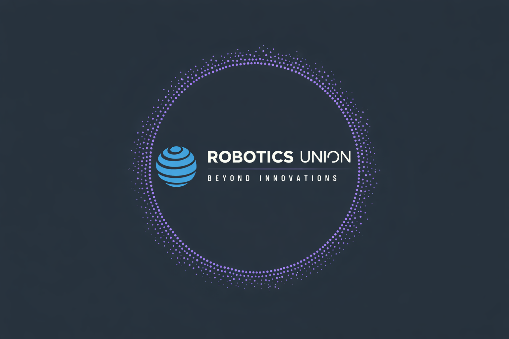
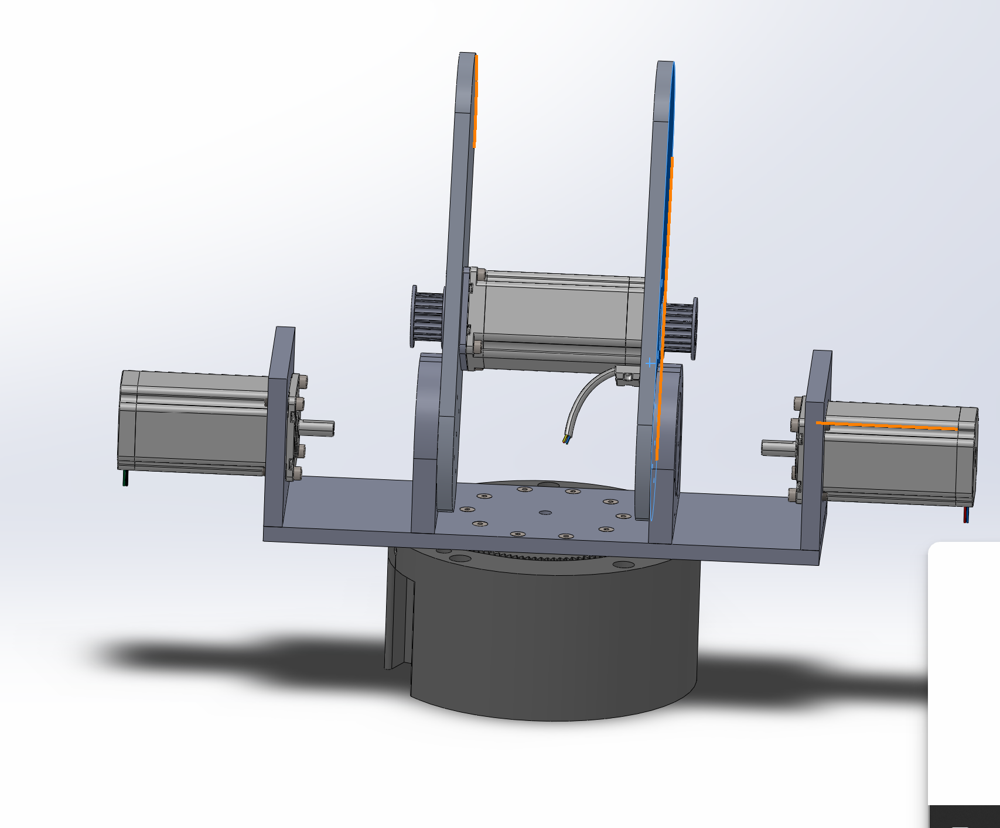
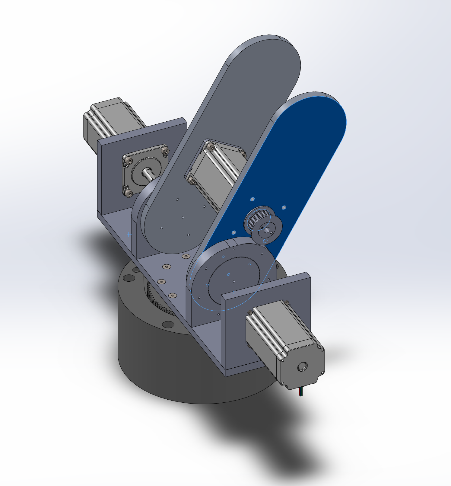

Heavy-Core-MK1 Robotics Platform
Heavy-Core-MK1 is a modular robotic arm project that combines mechanical engineering, electronics, firmware, and custom control software into one expandable development platform. The long-term goal is a scalable and affordable 6-DOF robotic arm that can be upgraded with different tools, tested safely, and used as a foundation for future automation experiments.
The project is currently in an alpha-style development stage. The first two axes have already been designed in CAD, printed, assembled, and functionally tested with stepper motor driven motion. At the same time, the software side is being developed around a control GUI, a Python robot-control layer, G-code tooling, calibration commands, and firmware experiments for the embedded controllers.

What This Control Panel Represents
Arm, axes, and gearboxes
The repository contains CAD, assemblies, STL exports, bearings, belt drive assets, encoder mounts, and first gearbox concepts. Axis 1 and Axis 2 are the first validated mechanical milestones, with ongoing work focused on the remaining axes and improved gearbox performance.
Control, calibration, and G-code
The Python control code includes a startup flow, password-protected commands, serial setup, calibration values, status output, a G-code editor, and a G-code starter that can validate supported movement commands before execution.
Firmware and axis communication
The embedded side is planned around Arduino and ESP32 controllers, CAN-capable firmware experiments, AS5600 encoder tests, stepper control libraries, and a simple time-synchronized status signaling concept for axis cards.
Community Guidelines
Contributions to Heavy-Core-MK1 should make the project easier to understand, safer to operate, and clearer to develop. The repository already separates GUI work, backend control logic, firmware, CAD, and documentation, so every change should respect those boundaries.
Content Creation Scope
Content creation is allowed inside this project, but it is limited to the graphical user interface and documentation-facing presentation layers. Contributors may redesign screens, improve layout, add clearer status areas, create better help pages, and make the operator experience more readable. The GUI can be modified, redesigned, extended, and visually improved as long as the core control logic and safety behavior are not weakened.
The GUI should display information, collect user input, and forward intended commands to the backend. It should not silently change calibration data, bypass password checks, hide important status values, remove safety warnings, or replace backend validation with untested visual-only logic. Robot movement, G-code validation, serial communication, live receiving, calibration, and firmware control must remain traceable and understandable.
Supported GUI Libraries
The current GUI and manual experiments use Python with PySide6. These imports are the approved base for GUI work in the existing Python prototype:
import os
import PySide6.QtWidgets as qw
import PySide6.QtCore as qc
import PySide6.QtGui as qg
QtWidgets should be used for windows, buttons, labels, tabs, lists, inputs, and control
surfaces. QtCore should handle signals, timers, state updates, and application behavior.
QtGui should be used for icons, fonts, colors, images, and rendering details. Keeping the
GUI on these libraries makes the interface easier to maintain and keeps the software stack consistent.
Required Safety Elements
The interface is not only decoration. For a robotic arm, the operator screen is part of the safety concept because it shows what the robot is doing, which limits are active, and whether the system is still in a controllable state. Every future GUI must keep the following elements visible and easy to reach:
- Digital emergency stop with a dedicated, obvious control state.
- Temperature monitoring for motors, voltage converters, and other heat-critical components.
- Load or utilization display so the operator can see when an axis is working near its limit.
- Current and power consumption display for diagnosing stress, stalls, and electrical issues.
- Overload protection indicator with a clear safe, warning, and fault state.
- Motor overview with status for every connected axis and actuator.
- Cooling system control for fans or water cooling, depending on the installed hardware version.
Projects
Heavy-Core-MK1 is not a single file or one isolated robot part. It is a growing set of connected subprojects that together form the mechanical arm, the control electronics, the operator software, and the documentation needed to build and test the platform.
Active Development Areas
Two-axis mechanical validation
The first two axes have been designed, printed, assembled, and successfully tested. This phase validates the early structure, torque calculations, stepper motor integration, and custom gearbox approach before the arm expands toward the full 6-DOF target.
Printable and machinable parts
The mechanical folders contain SolidWorks parts and assemblies, STL exports, base components, elbow components, shoulder parts, cycloidal drive pieces, encoder mounts, belt drive assets, bearings, spacers, shafts, brackets, plates, and motor mounting geometry.
Command system and GUI prototypes
The Python software includes a console command loop, interpreter, shared state module, password workflow, calibration commands, serial configuration, stats output, G-code editor, G-code validation, TCP receive mode, and a PySide6 manual/help GUI prototype.
Firmware and sensor experiments
The firmware area contains Arduino and ESP32 startup files, an AS5600 magnetic encoder test, and planned library support for stepper drivers, CAN bus, PID control, FreeRTOS tasks, displays, EEPROM, timers, and sensor integration.
Development Roadmap
| Phase | Description | Status or Target |
|---|---|---|
| MK1 Alpha | 2-DOF mechanical validation, first assembled axes, first showcase-ready project state. | Completed |
| MK1 Beta | Expansion toward a 4-DOF to 6-DOF mechanical prototype with improved axis modules. | Estimated Q3 2026 |
| MK1 Software Alpha | Basic motion control, operator interface, calibration workflow, and safer command handling. | Estimated Q3 2026 |
| MK1 Integrated Demo | Hardware and software working together for a demonstrable robotic arm system. | Estimated January 2027, HTL Open House |
| MK1 Full Prototype | Full 6-DOF arm with stronger software, better mechanics, and more polished safety features. | Future milestone |
Next Engineering Goals
- Complete the remaining arm axes and improve the strength-to-weight ratio of the structure.
- Optimize the gearbox designs so the arm can move with better torque, precision, and repeatability.
- Connect the desktop control layer with the robot-control layer and embedded axis controllers.
- Improve the GUI so status, calibration, G-code validation, and safety indicators are easy to read.
- Test communication between the control PC, ESP32 or Arduino hardware, motor drivers, and sensors.
Documentation
The repository is organized so that mechanical design, electronics, software, firmware, and project explanation can develop together. This documentation page summarizes where the important information lives and what each part of the project currently contains.
Repository Map
Project overview
The main README explains the Heavy-Core-MK1 vision, the target 6-DOF robotic arm, the current 2-DOF validation state, the custom control software idea, completed work, active work, and preliminary technical specifications.
Control stack
The software folder describes three planned layers: RoboticsUnion Control GUI, RoboticsUnion Robot Control, and RoboticsUnion Firmware. The Python prototype currently holds the command system, calibration commands, G-code tools, manual GUI, and shared state text.
CAD, assemblies, and STL exports
Mechanical files are separated into CAD, assemblies, STL exports, and reusable assets. This includes base, shoulder, elbow, cycloidal drive, belt drive, bearing, encoder, stepper motor, screw, bolt, and nut resources used to design the arm.
Mainboard and communication concepts
The electronics area contains mainboard and axis-card concept drawings. The C++ documentation also describes a simple synchronized 4-bit status system that can report OK and fault codes from axis cards to the main control system.
Software Command Notes
The current Python control prototype starts from Startup.py, checks that the expected
project files exist, creates a password workflow, and then runs the main command loop from
console_user.py. Commands are mapped through interpreter.py into functions
for package checks, password recovery, serial setup, calibration, status output, G-code editing,
G-code starting, manual GUI display, and a live clock.
The G-code starter can select a file, validate supported commands, and receive command data through a
TCP connection. The compiler currently accepts G0 with X/Y/Z movement, G1
with X/Y/Z/F movement, and G78 with X/Y/F/S parameters. Comments in parentheses and text
after a semicolon are ignored during validation.
Important Documentation Themes
- Always calibrate link lengths, rotations, wrist angles, and tool offsets before movement tests.
- Use status output to check stored calibration values, selected G-code file, and terminal state.
- Keep unfinished live-receive features away from real hardware until they are tested safely.
- Document every axis module with CAD source, exported STL, assembly notes, wiring notes, and test results.
- Update the website whenever the roadmap, tested axes, firmware, or safety interface changes.


About Heavy-Core-MK1
Heavy-Core-MK1 is built around the idea that a robotic arm should be more than a collection of printed parts. It should be a complete robotics ecosystem where structure, drives, electronics, software, safety, and documentation are designed together from the beginning.
Project Vision
The project aims to create a 6-DOF robotic arm that can grow over time. The arm should support interchangeable end effectors, use a structure optimized for strength and weight, rely on custom control software, and eventually support more advanced automation features. The platform is meant to be affordable enough for learning and experimentation while still being serious enough to teach real engineering tradeoffs.
Heavy-Core-MK1 is also a learning platform. Mechanical design decisions affect motor loads and gearbox requirements. Electronics decisions affect sensor feedback and firmware timing. Software decisions affect operator safety, calibration accuracy, and how movement commands are checked before they reach the robot. Bringing all of those pieces together is the point of the project.
Why The Project Stands Out
The repo does not treat mechanics, electronics, and software as separate worlds. Each part is designed to support the others, from axis modules and encoder mounts to command validation and future operator safety screens.
The early 2-DOF test stage gives the project a real base before scaling to more axes. This makes it possible to validate torque, motion, assembly, and software behavior before committing to the full 6-DOF prototype.
The control software is being developed specifically for this arm. Instead of relying only on simple position commands, the roadmap includes feedback, inverse kinematics, simulation, collision awareness, overload prevention, and expandable control architecture.
Technical Identity
- Robot type: modular robotic arm platform.
- Target motion: full 6-DOF movement with upgradeable end effectors.
- Current prototype: first two axes mechanically designed, assembled, and tested.
- Actuation: stepper motor based development with custom gearbox work.
- Materials: aluminum and PLA now, with stronger printed materials planned.
- Control hardware: Arduino and ESP32 based development path.
- Software: custom desktop or mobile control application with Python and C++ components.